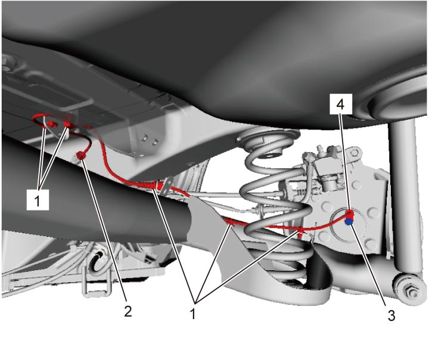
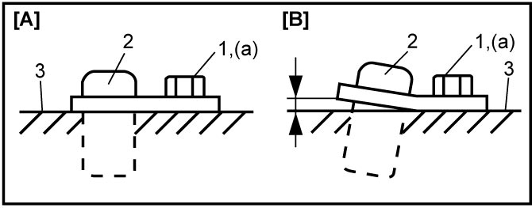

4F
| Rear Wheel Speed Sensor Removal and Installation |
2WD Model
Removal
1)Disconnect negative (–) cable at battery.
2)Hoist vehicle a little and remove wheel.
3)Remove clips (1) and disconnect rear wheel speed sensor connector (2).
4)Remove rear wheel speed sensor bolt (3).
5)Remove rear wheel speed sensor (4) from rear wheel hub assembly.


 "Expand image")
Installation
Reverse removal procedure noting the following points.
•Check that no iron powder attaches to sensing area of wheel speed sensor (2).
•Tighten wheel speed sensor bolt (1) to specified torque.
•Check that there is no space between rear wheel speed sensor and rear wheel hub assembly (3).
•Install wheel. 
•Tighten wheel speed sensor bolt (1) to specified torque.
•Check that there is no space between rear wheel speed sensor and rear wheel hub assembly (3).

 "Expand image")
| [A]: | OK | [B]: | NG |
4WD Model
NOTE:
Rear wheel speed sensor is included in rear wheel hub assembly. If rear wheel speed sensor needs to be replaced, replace it as a rear wheel hub assembly.